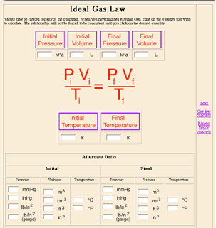

Doing It by the Numbers: Javascript Calculations in Web-Based Instructional Material, Carl Rod Nave
Page 2
The problem of various unit systems is even more apparent in applications involving pressure where a variety of units is used. For example, this ideal gas law calculation provides the comparison of the SI pressure unit with the common liquid column height type units. It also deals with the different temperature scales. Besides dealing with a variety of units, this calculation illustrates two additional elements of the strategy used in the Javascript web calculations. By providing active, clickable graphics for the initiation of the calculation, a user can enter the available data and click on any of the six quantities to calculate the value of that parameter consistent with the other data entered. The second strategy which I have come to by practical experience is to provide default entries for all variables if their value is zero. That keeps a user from dealing with division by zero and provides some reasonable parameters for the beginning of their numerical exploration.
|

|
For example, I can just click on Final Pressure without entering any data, and it performs the calculation with the default values. Then if I enter a new initial pressure and temperature, it provides the conversion of those values to all the unit systems, and I can then click on Final Pressure again to examine the change. My hope is that this kind of calculation will lead the user off into "what if?" type questions and a numerical exploration of the ideal gas law.
|
Continue to page 3
|
AAPT Guelph Paper Outline
Top of Paper |